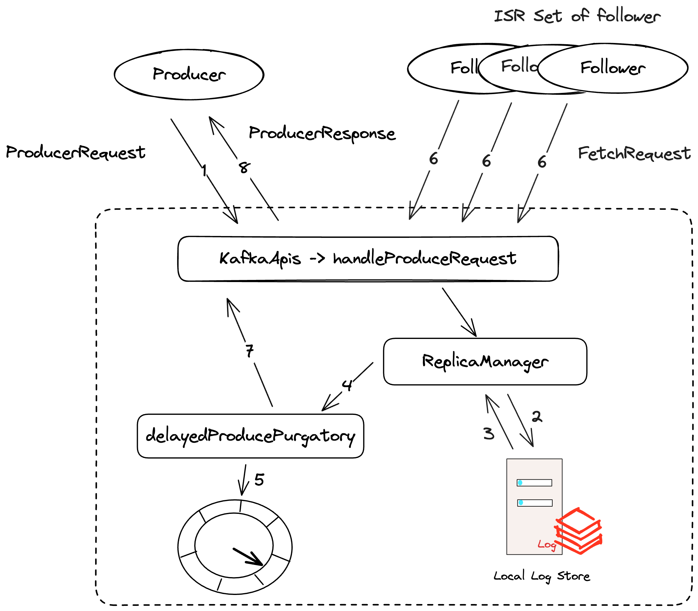

本文简单介绍当Broker接受到producerRequest的时候
每个Partition都有两个管理对象ReplicaManager 和 LogManger
| 管理对象 | 组成部分 | |
|---|---|---|
| 日志管理器 |
日志 |
日志分段 |
| 副本管理器 |
分区 |
副本 |
生产者的ack是可以配置的
KafkaApis是Kafka服务器处理请求的入口类,负责将KafkaRequestHandler传递过来的请求分发到不同的handle*()处理方法中
case ApiKeys.PRODUCE => handleProduceRequest(request, requestLocal)
handleProduceRequest中前面是验证request
replicaManager.appendRecords(
timeout = produceRequest.timeout.toLong,
requiredAcks = produceRequest.acks,
internalTopicsAllowed = internalTopicsAllowed,
origin = AppendOrigin.CLIENT,
entriesPerPartition = authorizedRequestInfo,
requestLocal = requestLocal,
responseCallback = sendResponseCallback,
recordConversionStatsCallback = processingStatsCallback,
transactionalId = produceRequest.transactionalId(),
transactionStatePartition = transactionStatePartition)
- appendEntries:
- appendLogResults
- appendToLocalLog
- appendRecordsToLeader
- appendToLocalLog
- appendLogResults
先对leaderIsrUpdateLock用读锁
def appendRecordsToLeader(records: MemoryRecords, origin: AppendOrigin, requiredAcks: Int,
requestLocal: RequestLocal, verificationGuard: Object = null): LogAppendInfo = {
val (info, leaderHWIncremented) = inReadLock(leaderIsrUpdateLock) {
// leaderLogIfLocal 这个变量是在 LeaderAndIsr 的构造函数中初始化的
leaderLogIfLocal match {
case Some(leaderLog) =>
val minIsr = leaderLog.config.minInSyncReplicas
val inSyncSize = partitionState.isr.size
// Avoid writing to leader if there are not enough insync replicas to make it safe
if (inSyncSize < minIsr && requiredAcks == -1) {
throw new NotEnoughReplicasException(s"The size of the current ISR ${partitionState.isr} " +
s"is insufficient to satisfy the min.isr requirement of $minIsr for partition $topicPartition")
}
val info = leaderLog.appendAsLeader(records, leaderEpoch = this.leaderEpoch, origin,
interBrokerProtocolVersion, requestLocal, verificationGuard)
// we may need to increment high watermark since ISR could be down to 1
(info, maybeIncrementLeaderHW(leaderLog))
case None =>
throw new NotLeaderOrFollowerException("Leader not local for partition %s on broker %d"
.format(topicPartition, localBrokerId))
}
}
info.copy(if (leaderHWIncremented) LeaderHwChange.INCREASED else LeaderHwChange.SAME)
}
- delayedProduceRequestRequired
检查requiredAcks,如果是-1
val produceMetadata = ProduceMetadata(requiredAcks, produceStatus)
val delayedProduce = new DelayedProduce(timeout, produceMetadata, this, responseCallback, delayedProduceLock)
其中delayedProduce封装的是每个TopicPartition对应的写入Leader副本的lastOffset + 1的记录
def produceStatusResult(appendResult: Map[TopicPartition, LogAppendResult], useCustomMessage: Boolean): Map[TopicPartition, ProducePartitionStatus] = {
appendResult.map { case (topicPartition, result) =>
topicPartition -> ProducePartitionStatus(
result.info.lastOffset + 1, // required offset
new PartitionResponse(
result.error,
result.info.firstOffset.map[Long](_.messageOffset)
.orElse(-1L),
result.info.lastOffset,
result.info.logAppendTime,
result.info.logStartOffset,
result.info.recordErrors,
if (useCustomMessage) result.exception.get.getMessage else result.info.errorMessage
)
) // response status
}
}
producerRequestKeys指的是如果其他副本还没有同步完成
DelayedOperation
DelayedOperationPurgatory是用来管理延迟操作
delayedProducePurgatory.tryCompleteElseWatch(delayedProduce, producerRequestKeys)
tryCompleteElseWatch如其名字所示
if (operation.safeTryCompleteOrElse {
watchKeys.foreach(key => watchForOperation(key, operation))
if (watchKeys.nonEmpty) estimatedTotalOperations.incrementAndGet()
}) return true
在调用safeTryCompleteOrElse时
def safeTryCompleteOrElse(f: => Unit): Boolean = inLock(lock) {
if (tryComplete()) true
else {
f
// last completion check
tryComplete()
}
}
tryComplete()满足的条件在源码的注释中有写道
/**
* The delayed produce operation can be completed if every partition
* it produces to is satisfied by one of the following:
*
* Case A: Replica not assigned to partition
* Case B: Replica is no longer the leader of this partition
* Case C: This broker is the leader:
* C.1 - If there was a local error thrown while checking if at least requiredAcks
* replicas have caught up to this operation: set an error in response
* C.2 - Otherwise, set the response with no error.
*/
如果满足其中任何一个条件
def tryComplete(): Boolean = {
// check for each partition if it still has pending acks
produceMetadata.produceStatus.forKeyValue { (topicPartition, status) =>
// skip those partitions that have already been satisfied
if (status.acksPending) {
val (hasEnough, error) =
replicaManager.getPartitionOrError(topicPartition) match {
case Left(err) =>
// Case A
(false, err)
case Right(partition) =>
partition.checkEnoughReplicasReachOffset(
status.requiredOffset)
}
// Case B || C.1 || C.2
if (error != Errors.NONE || hasEnough) {
status.acksPending = false
status.responseStatus.error = error
}
}
}
// check if every partition has satisfied
//at least one of case A, B or C
if (!produceMetadata.produceStatus.values.exists(_.acksPending))
forceComplete()
else
false
}
getPartitionOrError是为了判断此broker是不是该副本的leader
def getPartitionOrError(topicPartition: TopicPartition): Either[Errors, Partition] = {
getPartition(topicPartition) match {
case HostedPartition.Online(partition) =>
Right(partition)
case HostedPartition.Offline =>
Left(Errors.KAFKA_STORAGE_ERROR)
case HostedPartition.None if metadataCache.contains(topicPartition) =>
// The topic exists, but this broker is no longer a replica of it, so we return NOT_LEADER_OR_FOLLOWER which
// forces clients to refresh metadata to find the new location. This can happen, for example,
// during a partition reassignment if a produce request from the client is sent to a broker after
// the local replica has been deleted.
Left(Errors.NOT_LEADER_OR_FOLLOWER)
case HostedPartition.None =>
Left(Errors.UNKNOWN_TOPIC_OR_PARTITION)
}
}
checkEnoughReplicasReachOffset这个方法比较重要
def checkEnoughReplicasReachOffset(requiredOffset: Long): (Boolean, Errors) = {
leaderLogIfLocal match {
case Some(leaderLog) =>
// keep the current immutable replica list reference
val curMaximalIsr = partitionState.maximalIsr
if (isTraceEnabled) {
def logEndOffsetString: ((Int, Long)) => String = {
case (brokerId, logEndOffset) => s"broker $brokerId: $logEndOffset"
}
val curInSyncReplicaObjects = (curMaximalIsr - localBrokerId).flatMap(getReplica)
val replicaInfo = curInSyncReplicaObjects.map(replica => (replica.brokerId, replica.stateSnapshot.logEndOffset))
val localLogInfo = (localBrokerId, localLogOrException.logEndOffset)
val (ackedReplicas, awaitingReplicas) = (replicaInfo + localLogInfo).partition {
_._2 >= requiredOffset
}
trace(s"Progress awaiting ISR acks for offset $requiredOffset: " +
s"acked: ${ackedReplicas.map(logEndOffsetString)}, " +
s"awaiting ${awaitingReplicas.map(logEndOffsetString)}")
}
val minIsr = leaderLog.config.minInSyncReplicas
if (leaderLog.highWatermark >= requiredOffset) {
/*
* The topic may be configured not to accept messages if there are not enough replicas in ISR
* in this scenario the request was already appended locally and then added to the purgatory before the ISR was shrunk
*/
if (minIsr <= curMaximalIsr.size)
(true, Errors.NONE)
else
(true, Errors.NOT_ENOUGH_REPLICAS_AFTER_APPEND)
} else
(false, Errors.NONE)
case None =>
(false, Errors.NOT_LEADER_OR_FOLLOWER)
}
}
如果满足leaderLog.highWatermark >= requiredOffset
override def onComplete(): Unit = {
val responseStatus = produceMetadata.produceStatus.map { case (k, status) => k -> status.responseStatus }
responseCallback(responseStatus)
}
上面介绍的tryComplete成功的情况
Broker Server HandleProducerRequest 的diagram如下
